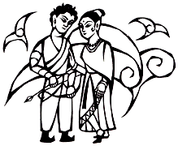

It was Capa, the village leader's beautiful daughter, who cheered him up when he was in distress.
By her carefree smile, her innocent looks when chanting, and her active young appearance, he was encouraged and he felt relieved.
When the leader sensed Upaka's feelings, he asked.
"Upaka, how do you think about my daughter?"
"She is a good girl -- honest and joyous. And more, she is the most beautiful in the village."
The leader was satisfied with Upaka's response, and then his face suddenly looked serious and said.
"Upaka, I will give my daughter to you if you become a hunter in the village. What do you think?"
Upaka's heart was shaking because he was in love with Capa.
He thought:
"Even it is called the sacred path, but I have not obtained any true happiness and satisfaction in my current training.
I will be relieved a lot if I will be with Capa."
Upaka made up his mind and he became a hunter.
Soon his pretty child was born and he had spent many joyous days.
He felt like he had gained a comfort and joy that he had never had before.
